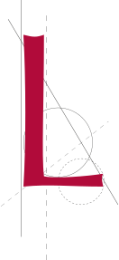

abor
From humble beginnings, Plantin began as a bookbinder's apprentice, learning precision and dedication. By the 1560s, his print shop in Antwerp was unmatched, operating 22 presses and producing 25,000 books annually.
For Plantin, labor was not merely work, it was a pursuit of lasting cultural and intellectual impact.


For example, his masterpiece, the Polyglot Bible, took four years of intense collaboration with scholars and exemplified his commitment to quality.